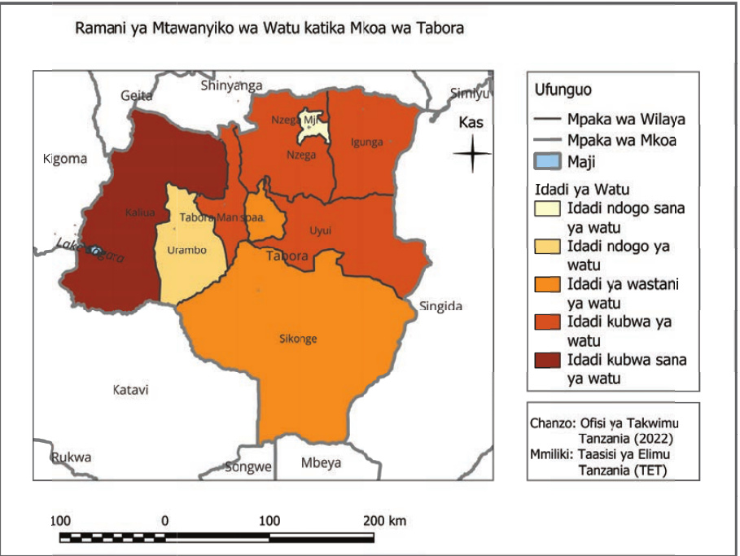
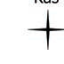

Ramani ya Mtawanyiko wa Watu katika Mkoa wa Tabora

100 0 100 200 km

Kas
Kielelezo namba 4: Mtawanyiko wa watu katika Mkoa wa Tabora
Ramani za hali ya hewa
Ramani hizi zinawasilisha mtawanyiko wa hali ya hewa katika eneo fulani. Zinawasilisha vipengele vya hali ya hewa kama vile; joto, mvua, upepo, unyevu-anga, na mabadiliko ya hewa unavyotofautiana kati ya eneo moja na lingine. Ramani hizi ni muhimu kwa shughuli za kilimo, biashara, utalii na usafirishaji. Kielelezo namba 5 kinawasilisha mtawanyiko wa mvua katika mkoa wa Iringa.